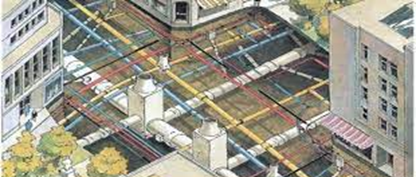

Estrategias para evitar la contaminación
Este blog esta enfocado en las estrategias que existen para detectar y limpiar las tuberias en caso de que esten contaminadas por agentes externos (microorganismos)
La biocorrosión, también conocida como corrosión microbiana y más específicamente llamada corrosión influida microbiológicamente o MIC (por sus siglas en Inglés, Microbiologically Influenced Corrosion) se puede definir como “un proceso electroquímico que produce el deterioro de un material metálico donde se encuentran involucrados microorganismos (bacterias, hongos o algas) ya sea iniciando, facilitando o acelerando el proceso de ataque corrosivo”.
Los microorganismos anaeróbicos provocan un incremento de hasta 10 veces en la velocidad de corrosión por la producción del H2S y la liberación de enzimas específicas (principalmente “hidrogenasa”). Se han identificado algunas especies de microorganismos clasificados como «Hidrógeno-dependientes» que usan el hidrógeno disuelto del agua en sus procesos metabólicos provocando una diferencia de potencial del medio circundante.
Mantenimiento Preventivo
Este mantenimiento se refiere a las acciones de inspección y seguimiento de los elementos de las redes para tratar de evitar que se produzca su fallo. El mantenimiento preventivo está programado. El tiempo que el elemento no está en uso es el dedicado exclusivamente a la operación propiamente dicha. Por esta razón, el tiempo de mantenimiento preventivo es siempre inferior al tiempo de mantenimiento correctivo. Y unas de las mejores maneras es: Detección De Corrosión Por Ultrasonido Con Presentación De Barrido C.
Programa de Mantenimiento
> El enjuague y la limpieza mecánica
CIP Cleaning in Place (limpieza “in situ”). Significa la limpieza de plantas de producción sin desmontar o cambiar el estado de funcionamiento para asegurar la consistencia y sostenibilidad. Para completar una limpieza eficiente deben estar presentes los cuatro elementos incluidos en el círculo de Sinner:
1. Producto de limpieza: se refiere a energía química o la concentración de la disolución de limpieza.
2. Energía mecánica: En los procesos CIP se refiere a caudales, velocidad y presión de flujo. Si se está limpiando tuberías, se deben considerar el caudal y la velocidad de flujo. Se debe conseguir durante la limpieza un flujo turbulento.
3. Esquema de una tubería con flujo laminar y con flujo turbulento:
La velocidad de flujo es la distancia recorrida por tiempo (m/s). La velocidad del fluido varia en el diámetro de la tubería, es más alta en el centro de la tubería y menor en la pared de la tubería (debido a la fricción), esto se denomina perfil de velocidad.
4. Temperatura: El control de temperatura es importante, y más caliente no siempre es mejor (ya que a partir de cierta temperatura se pueden desnaturalizar proteínas). En este contexto, la medición precisa de la temperatura y la calibración periódica de los termómetros es muy importante.
5. Tiempo: Todos los procesos físico-químicos de disolver/dispersar depósitos de suciedad dependen de factores de tiempo. Si se analiza desde el punto de vista de la eficiencia química del detergente, la suciedad se elimina capa a capa; aunque tengamos una alta concentración de detergente, es necesario un cierto tiempo de contacto antes de poder eliminar la última capa de suciedad.
> Método Hidráulico o Flusinhg
Consiste en liberar y remover partículas contaminantes del sistema, forzando un fluido a alta velocidad a través de este. En teoría, debería dejar las paredes internas de los conductores con el mismo nivel de limpieza que el aceite que se va a introducir. Luego, durante la operación, el sistema experimentará únicamente contaminación generada internamente, o extraída desde el exterior que puede ser controlada a través de filtración convencional.
Una desventaja de los procesos de lavado es que están basados en procedimientos para limpiar el fluido, pero ignoran la limpieza interna del sistema. Incluso cuando se instalan tuberías y conductores con sumo cuidado a nivel visual, el ojo humano solo puede ver partículas más grandes de 40 micrones – muy por debajo del requerido hasta por el sistema más básico en tecnología hidráulica.
Esquema de como funciona un sistema hidráulico.
Eliminación de las Conexiones Cruzadas y Prevención de Reflujo
La USEPA (2002b) indica que el reflujo en los sistemas de distribución de agua pública puede ser prevenido eliminando las conexiones cruzadas o protegiendo los suministros de agua potable usando dispositivos y montajes de prevención de reflujo. Como puede suceder con cualquier dispositivo mecánico, los equipos de reflujo pueden deteriorarse y fallar con el tiempo. Los intervalos para realizar las pruebas son anuales, semi-anual o basados en el riesgo. Es importante señalar que el mantenimiento de una presión estable y positiva reduce el reflujo. Minimizando los picos de presión a través del uso de bombas de velocidad variable y los procedimientos adecuados de abertura y cierre de válvulas podría reducirse la frecuencia de rupturas en las tuberías principales y de este modo operar preventivamente.

Sistema de conexiones entre tuberias.